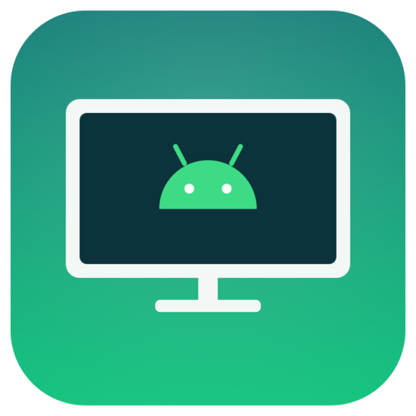

拖入或选择安装包，自动识别 .apk / .xapk / .apkm 支持流式安装，不占盒子存储。
.apk
.xapk
.apkm
把安装包拖到这里
或
第三方应用可卸载；系统应用不可卸载，仅可禁用（可随时启用恢复）。
把手机 / 电脑变成盒子遥控器。
交互式 shell（真 PTY）。支持上下方向键翻历史记录、TAB 键自动补全命令
抓盒子系统日志，按标签/优先级过滤，支持下载。
// 日志输出区（待接入）。未连接时为空。
已连接设备的只读信息。
仅 Chromecast with Google TV 等使用「无线调试随机端口」的设备需要这一步； 普通 Android TV / 电视盒子一般不需要配对。 在电视上打开：开发者选项 → 无线调试 → 使用配对码配对设备，把弹窗里的 配对端口和6 位配对码填到这里。 ⚠️ 配对弹窗要保持打开，离开设置页面码就会失效。
配对只需一次，之后会自动维持 5555。